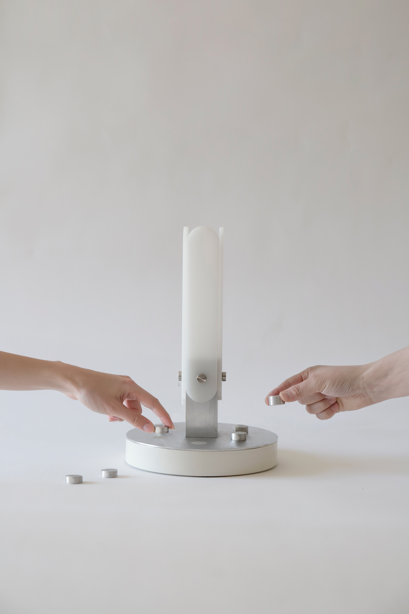
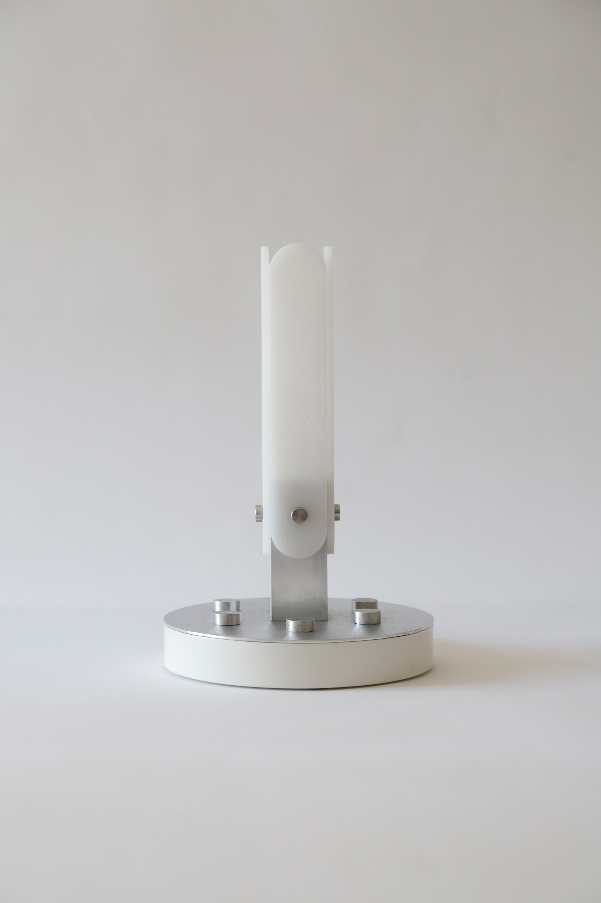
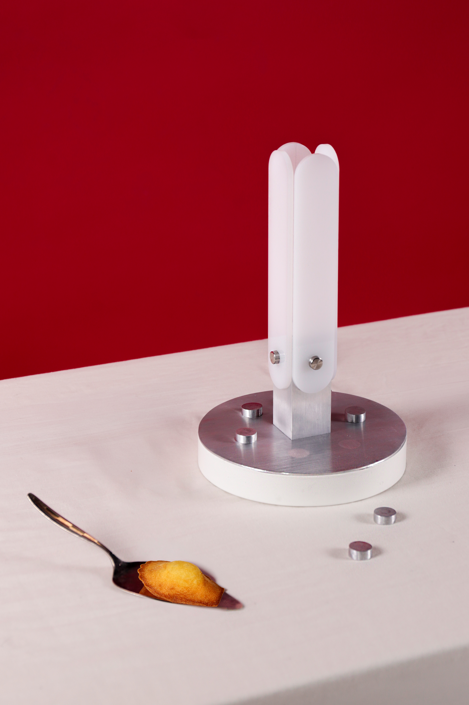
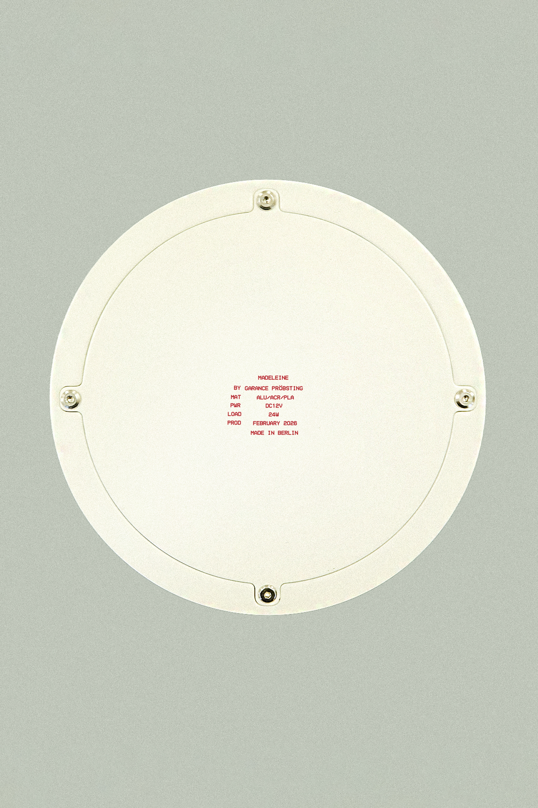

Madeleine
Februrary 2026
The Madeleine table lamp explores the abdication of object autonomy. In a world saturated with services designed to anticipate our every need, Madeleine remains deliberately silent until a collective intent is manifested. This 'collective enactment‘ transforms light from mere utility into a relational mediator : a shared temporal frame for the inhabitation of a common habitat.
Produced out of brushed aluminium, acrylic, and PLA, Madeleine is driven by a microcontroller and magnetic circuit. Through a collective gesture, individuals create their own man-made micro environment, once all the magnetic tokens displayed on the central repository of the lamp.




